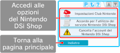

● Collegamento account Club Nintendo
Se sei membro del Club Nintendo puoi collegare il tuo indirizzo e-mail registrato nel sito Internet Nintendo all’account del Nintendo DSi Shop. L’indirizzo del sito Internet Nintendo è www.nintendo.com/countryselector
Se colleghi il tuo indirizzo e-mail al tuo account del Nintendo DSi Shop, potrai ottenere ulteriori vantaggi. Per maggiori informazioni, visita il sito Internet www.club-nintendo.com
● Accordo per l’utilizzo del servizio Nintendo DSi Shop
Consulta l’Accordo per l’utilizzo del servizio Nintendo DSi Shop per maggiori informazioni a riguardo dei termini e delle condizioni dei servizi offerti tramite il Nintendo DSi Shop.
● Cancella l’account del Nintendo DSi Shop
Se cancelli il tuo account del Nintendo DSi Shop, perderai tutti i tuoi Nintendo DSi Points e tutti i software che hai scaricato. Non ti sarà possibile neanche effettuare un nuovo download gratuito dei software precedentemente scaricati.